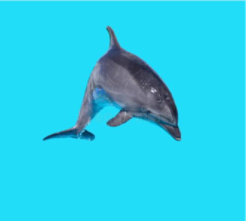
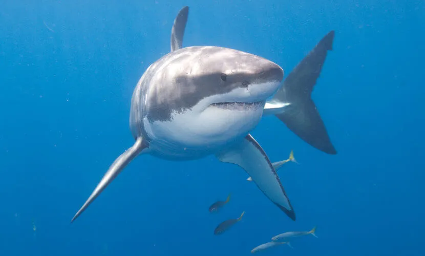

Cachorro
O mesmo hormônio (oxitocina) que faz seu cachorro te amar loucamente, também o faz se apaixonar. Ele é o hormônio do amor, responsável também pela interação do cão com o mundo ao seu redor: o dono, familiares e outros cães.
Gato
Os gatos possuem uma energia muito especial; eles possuem a capacidade de absorver e neutralizar as energias negativas do espaço onde se encontram e das pessoas com quem (con)vivem, limpando e purificando o ambiente energético que os envolve.
Crocodilo
Os crocodilos não possuem predadores naturais, por se tratar de um animal de topo na cadeia alimentar. O maior réptil hoje na face da terra é o crocodilo-de-água-salgada encontrado no norte da Austrália e ilhas do sudeste da Ásia. Os crocodilos, depois das aves, são os parentes mais próximos dos dinossauros atualmente.
Golfinho
O som emitido pelos golfinhos é produzido nos canais respiratórios, quando o ar passa sob forte pressão, emitem sons em diversas frequências. Como estalos, cliques e assobios. Esses sons são utilizados tanto na comunicação como na ecolocação, que funciona como um radar dentro d'água.
Pato

Os patos são precoces, o que quer dizer que os seus filhotes já são capazes de andar e deixar o ninho algumas horas depois de terem chocado de seus ovos. Isso ajuda a proteger os pequenos patos de predadores, já que eles não precisam ficar na vulnerável área do ninho por muito tempo.
Sapo
Os sapos alimentam-se de aranhas, besouros, gafanhotos, moscas, formigas e cupins. Algumas espécies maiores podem comer pequenos pássaros e até mesmo outros sapos. O sapo captura suas presas através da língua, bastante ágil e extensível.
Macaco
Aproximadamente 60% das espécies de primatas do mundo, incluindo chimpanzés e orangotangos, correm risco de extinção devido à redução de hábitat causada pela expansão das fronteiras agrícolas e, em menor escala, pela exploração madeireira e em razão da caça de animais silvestres.
Pombo

A reprodução dos pombos ocorre de quatro a cinco vezes por ano. Após a postura, os ovos levam 18 dias para eclodir e, regularmente, nasce um casal por vez. A fêmea se encarrega de chocar os ovos à noite e o macho, durante o dia.
Rato
Os ratos têm hábitos noturnos, expondo-se à luz do dia somente quando sua população aumenta muito e há insuficiência de alimento. Na falta de alimento, possui mecanismos que limitam a população: baixa da fertilidade e fecundidade das fêmeas, supressão de cios, canibalismo, dentre outros.
Tubarão
Pode exercer a força de três toneladas por centímetro quadrado numa mordida. Um tubarão pode perder até 30 mil dentes ao longo de sua vida. Sempre que um cai, nasce outro no lugar.